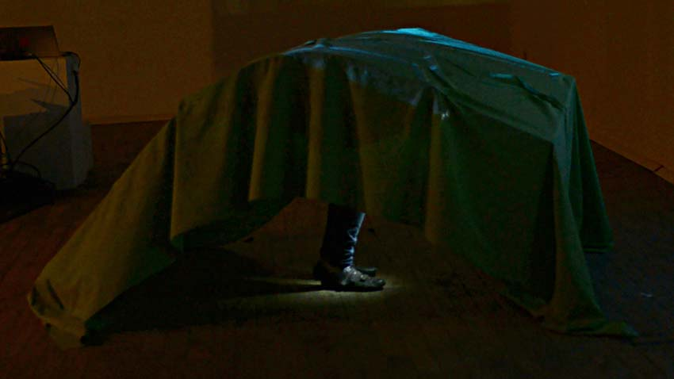
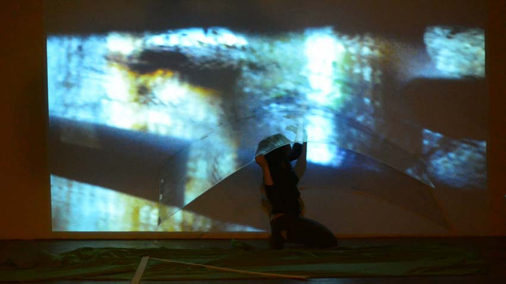
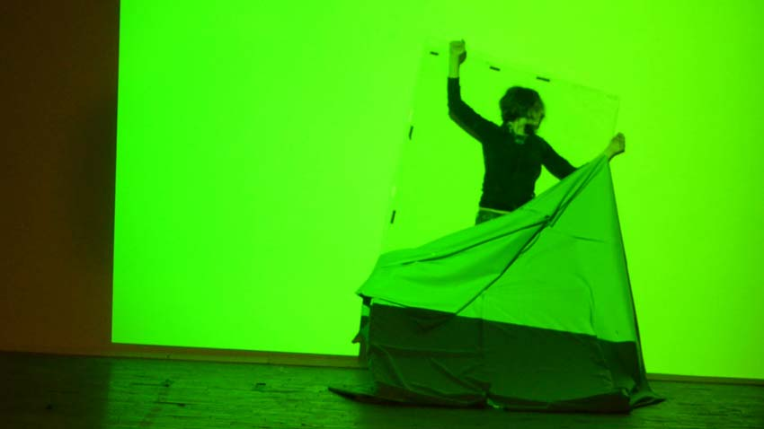
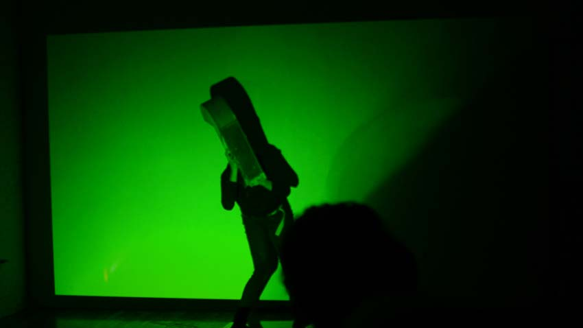
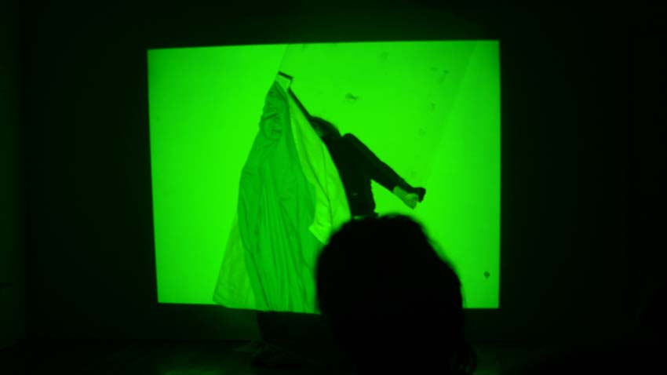
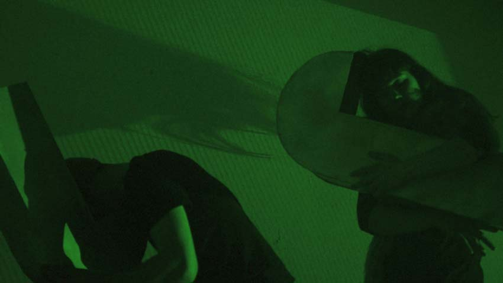

Jessica Arseneau
:: portfolio
Images et projets
Peut-être que j'avais besoin d'une cheminée
2014-2015
Performance
À Fantaisie des Escales: Bouillon #1 (2014) with Les Escales Improbables de Montréal, Montréal QC



À Synthetic Zero Event (2015), BronxArtSpace, Ville de New York, NY



Comment nous positionner à travers le spectacle du quotidien et les constructions fictives qui le complète ?
Comment nous positionner à travers la mise en spectacle du quotidien et les constructions fictives qui la complète ? Dans cette performance, le vert chromakey est utilisé en référence à la fabrication des images fictives. Le corps humain porte des tuyaux d'aérations, poumons des bâtiments et d’architectures postindustrielles, avec lesquels les corps dansent de manière irrationnelle. La feuille d’acrylique crée une réflexion et une distorsion de l'image projetée en rappelant la distance poreuse entre les informations quotidiennes et la réalité.